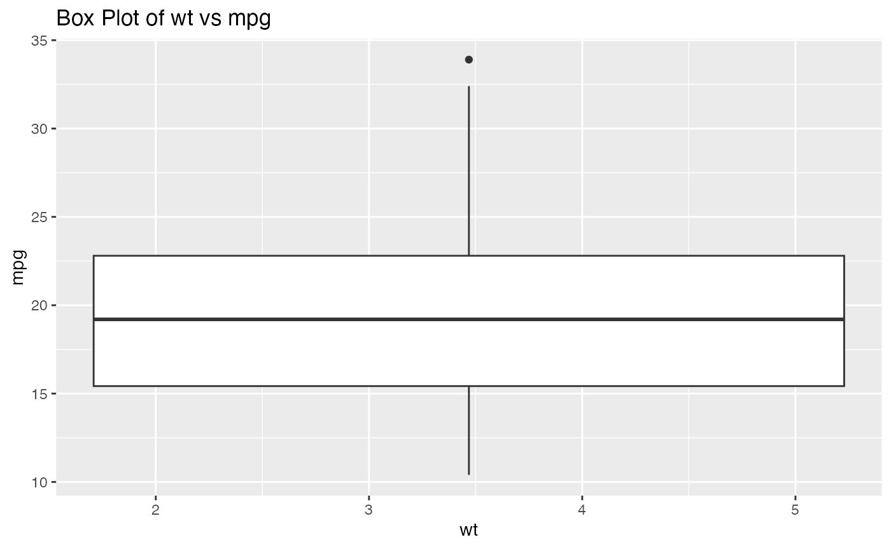
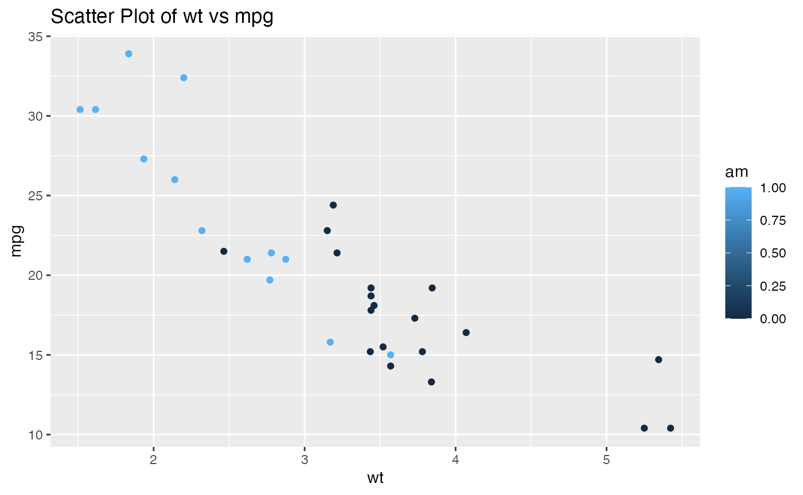

vignettes/predictcultivars-vignette.Rmd
predictcultivars-vignette.Rmdpredictcultivar
Welcome to our package! It was designed to streamline our data
analysis project and produce code that can be easily used by others.
This package contains 6 functions to take your project from Exploratory
Data Analysis to finished, tuned knn model.
To demonstrate the package, we will use the dataset
mtcars in R.
#> mpg cyl disp hp drat wt qsec vs am gear carb
#> Mazda RX4 21.0 6 160 110 3.90 2.620 16.46 0 1 4 4
#> Mazda RX4 Wag 21.0 6 160 110 3.90 2.875 17.02 0 1 4 4
#> Datsun 710 22.8 4 108 93 3.85 2.320 18.61 1 1 4 1
#> Hornet 4 Drive 21.4 6 258 110 3.08 3.215 19.44 1 0 3 1
#> Hornet Sportabout 18.7 8 360 175 3.15 3.440 17.02 0 0 3 2
#> Valiant 18.1 6 225 105 2.76 3.460 20.22 1 0 3 1This dataset contains information about 32 cars, such as their weight
(wt) and fuel consumption (mpg). For this
demonstration, we will aim to predict what type of transmission a car
has (automatic or manual) based on wt and
mpg.
calc_stats()
This function allows you to calculate the mean and standard deviation for all numerical columns in a dataframe.
calc_stats(mtcars)
#> mpg cyl disp hp drat wt qsec
#> Mean 20.090625 6.187500 230.7219 146.68750 3.5965625 3.2172500 17.848750
#> SD 6.026948 1.785922 123.9387 68.56287 0.5346787 0.9784574 1.786943
#> vs am gear carb
#> Mean 0.4375000 0.4062500 3.6875000 2.8125
#> SD 0.5040161 0.4989909 0.7378041 1.6152create_boxplot()
This function produces a boxplot based on the data and variables it is given.
create_boxplot(mtcars,"wt","mpg")
#> Warning: Continuous x aesthetic
#> ℹ did you forget `aes(group = ...)`?
The function takes the variable names as strings.
create_scatter()
This function produces a scatterplot of x versus
y, with the points coloured according to the variable in
color_var.
create_scatter(mtcars,"wt","mpg","am")
The function takes the variable names as strings.
create_output_dir()
This function can be used for making sure a directory that is passed into a function exists. It creates a directory if it doesn’t exist. If the directory already exists, no changes are made.
list.dirs()
#> [1] "." "./data"
output_dir <-"results/"
create_output_dir(output_dir)
scatterplot <- create_scatter(mtcars,"wt","mpg","am")
ggplot2::ggsave(file.path(output_dir, "scatterplot.png"), scatterplot)
#> Saving 7.29 x 4.51 in image
list.dirs()
#> [1] "." "./data" "./results"read_and_factor()
Many classification models depend on the response variable being a factor. This function allows you to read data from a csv file and convert variables in the data to factors.
The function can accept a single variable to convert to a factor, in string form.
# show the class of `am` before it is factored
print(paste("Class of `am` before read_and_factor(): " , class(mtcars$am)))
#> [1] "Class of `am` before read_and_factor(): numeric"
# provide a directory to read data from. This data is the same as that in the mtcars dataset.
mtcars_data_directory <- "data/mtcars_data.csv"
# read the data from the directory and factor `am`
single_factored_data <- read_and_factor(mtcars_data_directory, "am")
#> New names:
#> Rows: 32 Columns: 12
#> ── Column specification
#> ──────────────────────────────────────────────────────── Delimiter: "," chr
#> (1): ...1 dbl (11): mpg, cyl, disp, hp, drat, wt, qsec, vs, am, gear, carb
#> ℹ Use `spec()` to retrieve the full column specification for this data. ℹ
#> Specify the column types or set `show_col_types = FALSE` to quiet this message.
#> • `` -> `...1`
# show the class of `am` after it is factored
print(paste("Class of `am` after read_and_factor(): " , class(single_factored_data$am)))
#> [1] "Class of `am` after read_and_factor(): factor"The function can also accept a list of variables to convert to factors, in string form.
# show the variable classes before being factored
print(paste("Class of `am` before read_and_factor(): " , class(mtcars$am)))
#> [1] "Class of `am` before read_and_factor(): numeric"
print(paste("Class of `vs` before read_and_factor(): " , class(mtcars$vs)))
#> [1] "Class of `vs` before read_and_factor(): numeric"
factored_list <- read_and_factor(mtcars_data_directory, c("am", "vs"))
#> New names:
#> Rows: 32 Columns: 12
#> ── Column specification
#> ──────────────────────────────────────────────────────── Delimiter: "," chr
#> (1): ...1 dbl (11): mpg, cyl, disp, hp, drat, wt, qsec, vs, am, gear, carb
#> ℹ Use `spec()` to retrieve the full column specification for this data. ℹ
#> Specify the column types or set `show_col_types = FALSE` to quiet this message.
#> • `` -> `...1`
# show the variable classes before after factored
print(paste("Class of `am` before read_and_factor(): " , class(factored_list$am)))
#> [1] "Class of `am` before read_and_factor(): factor"
print(paste("Class of `vs` before read_and_factor(): " , class(factored_list$vs)))
#> [1] "Class of `vs` before read_and_factor(): factor"This works even if some of the variables in the list are not present in the dataframe, as they are ignored and a warning is provided.
# show the variable classes before being factored
print(paste("Class of `am` before read_and_factor(): " , class(mtcars$am)))
#> [1] "Class of `am` before read_and_factor(): numeric"
print(paste("Class of `vs` before read_and_factor(): " , class(mtcars$vs)))
#> [1] "Class of `vs` before read_and_factor(): numeric"
factored_list <- read_and_factor(mtcars_data_directory, c("am", "vs", "fake_var"))
#> New names:
#> Rows: 32 Columns: 12
#> ── Column specification
#> ──────────────────────────────────────────────────────── Delimiter: "," chr
#> (1): ...1 dbl (11): mpg, cyl, disp, hp, drat, wt, qsec, vs, am, gear, carb
#> ℹ Use `spec()` to retrieve the full column specification for this data. ℹ
#> Specify the column types or set `show_col_types = FALSE` to quiet this message.
#> • `` -> `...1`
#> Warning in read_and_factor(mtcars_data_directory, c("am", "vs", "fake_var")):
#> Variable fake_var not found in the dataframe.
# show the variable classes before after factored
print(paste("Class of `am` before read_and_factor(): " , class(factored_list$am)))
#> [1] "Class of `am` before read_and_factor(): factor"
print(paste("Class of `vs` before read_and_factor(): " , class(factored_list$vs)))
#> [1] "Class of `vs` before read_and_factor(): factor"The function can also read the data without converting anything to factors.
unfactored_data <- read_and_factor(mtcars_data_directory)
#> New names:
#> Rows: 32 Columns: 12
#> ── Column specification
#> ──────────────────────────────────────────────────────── Delimiter: "," chr
#> (1): ...1 dbl (11): mpg, cyl, disp, hp, drat, wt, qsec, vs, am, gear, carb
#> ℹ Use `spec()` to retrieve the full column specification for this data. ℹ
#> Specify the column types or set `show_col_types = FALSE` to quiet this message.
#> • `` -> `...1`model_workflow()
This function streamlines the workflow associated with knn
classification models. It: 1. Splits data into training and testing sets
2. Scales and centres all predictors 3. Defines a knn classification
specification 4. Uses cross validation to find an optimal k
based on a specified number of validation folds and range of
k values to try 5. Fits a new knn classification model
based on the optimal k 6. Creates a confusion matrix 7.
Uses summarize_classes() to calculate accuracy, recall,
precision and f1 score of the model
num_folds <- 5
range_neighbors <- seq(1, 20)
response <- "am"
results <- model_workflow(mtcars, num_folds, range_neighbors, response)
#> →
[33m
[1mA
[22m
[39m |
[33mwarning
[39m: 20 samples were requested but there were 18 rows in the data. 13 will be used.
#> There were issues with some computations
[1m
[33mA
[39m
[22m: x1
#> →
[33m
[1mB
[22m
[39m |
[33mwarning
[39m: data length [85] is not a sub-multiple or multiple of the number of columns [18]
#> There were issues with some computations
[1m
[33mA
[39m
[22m: x1
→
[33m
[1mC
[22m
[39m |
[33mwarning
[39m:
[1m
[22mNo event observations were detected in `truth` with event level '0'.
#> There were issues with some computations
[1m
[33mA
[39m
[22m: x1
→
[33m
[1mD
[22m
[39m |
[33mwarning
[39m: 20 samples were requested but there were 20 rows in the data. 15 will be used.
#> There were issues with some computations
[1m
[33mA
[39m
[22m: x1
There were issues with some computations
[1m
[33mA
[39m
[22m: x4
[1m
[33mB
[39m
[22m: x2
[1m
[33mC
[39m
[22m: x4
[1m
[33mD
[39m
[22m: x1
#> There were issues with some computations
[1m
[33mA
[39m
[22m: x4
[1m
[33mB
[39m
[22m: x2
[1m
[33mC
[39m
[22m: x4
[1m
[33mD
[39m
[22m: x1
# show to confusion matrix
results[[1]]
#> Confusion Matrix and Statistics
#>
#> Reference
#> Prediction 0 1
#> 0 3 0
#> 1 2 4
#>
#> Accuracy : 0.7778
#> 95% CI : (0.3999, 0.9719)
#> No Information Rate : 0.5556
#> P-Value [Acc > NIR] : 0.1575
#>
#> Kappa : 0.5714
#>
#> Mcnemar's Test P-Value : 0.4795
#>
#> Sensitivity : 0.6000
#> Specificity : 1.0000
#> Pos Pred Value : 1.0000
#> Neg Pred Value : 0.6667
#> Prevalence : 0.5556
#> Detection Rate : 0.3333
#> Detection Prevalence : 0.3333
#> Balanced Accuracy : 0.8000
#>
#> 'Positive' Class : 0
#>
# show to dataframe of model metrics
results[[2]]
#> Accuracy Precision Recall F1_Score
#> Accuracy 0.7777778 0.3333333 NA NAsummarize_classes()
This function is designed to calculate model metrics from a confusion
matrix. What makes this function unique is that it works for multiclass,
non-numeric confusion matrices as well as binary class, numeric
matrices. Based on the standard structure of a confusion matrix produced
by caret::confusionMatrix(), we can calculate an average
value across all classes for any metric present in the confusion
matrix.
library(predictcultivar)
# define a 3 class confusion matrix according to the standard output of caret::confusionMatrix()
conf_matrix <- matrix(c(0.3678, 0.3690, 0.30000,
0.7134, 0.6108, 0.69591,
0.4051, 0.3229, 0.31579,
0.6802, 0.6581, 0.68000,
0.3466, 0.3347, 0.31873,
0.1275, 0.1235, 0.09562,
0.6772, 0.69591, 0.6802,
0.49795, 0.5406, 0.31873,
0.1275, 0.1235, 0.09562,
0.3147, 0.3825, 0.30279,
0.5406, 0.4899, 0.49795),
nrow = 3, byrow = TRUE)
rownames(conf_matrix) <- c("Class 1", "Class 2", "Class 3")
colnames(conf_matrix) <- c("Sensitivity", "Specificity", "Pos Pred Value", "Neg Pred Value", "Precision", "Recall", "F1","Prevalence", "Detection Rate", "Detection Prevalence", "Balanced Accuracy")
calc_recall <- summarize_classes(conf_matrix,3,"Recall")
calc_precision <- summarize_classes(conf_matrix,3,"Recall")
calc_detection_rate <- summarize_classes(conf_matrix,3,"Detection Rate")
# put calculations into a data frame
metrics_df <- data.frame(
Recall = calc_recall,
Precision = calc_precision,
Detection_Rate = calc_detection_rate
)
metrics_df
#> Recall Precision Detection_Rate
#> 1 0.3780367 0.3780367 0.5174333